Primero pegaremos en google o en el buscador que mas te guste el siguinete link Link a la pagina de ODOO, nos iremos abajo del todo y le daremos a descargar rellenaremos los datos y elegiremos la opción de ODOO 16
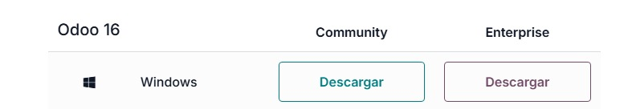Una vez instalado ejecutaremos el archivo odoo_16.0.latest que se puede ver en la imagen de abajo
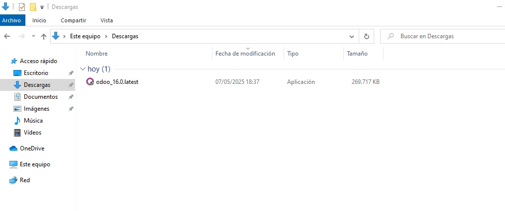Permitimos que la aplicación haga cambios
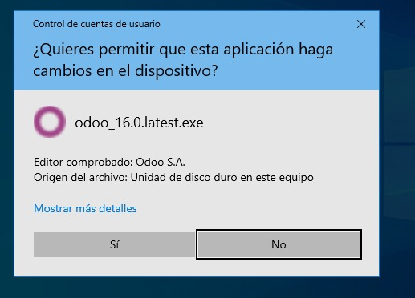Elegimos el idioma que queremos, en este caso solo nos permite escoger entre el inglés y el francés
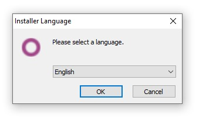Pulsamos siguiente
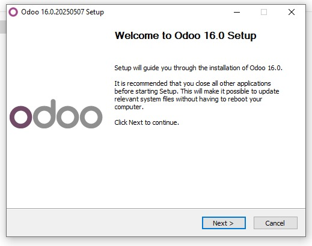Leemos la política si es necesario y si estamos de acuerdo le damos al botón
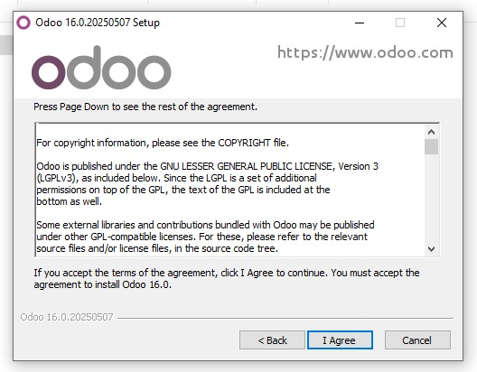Sin cambiar ninguna opción pulsamos a siguiente
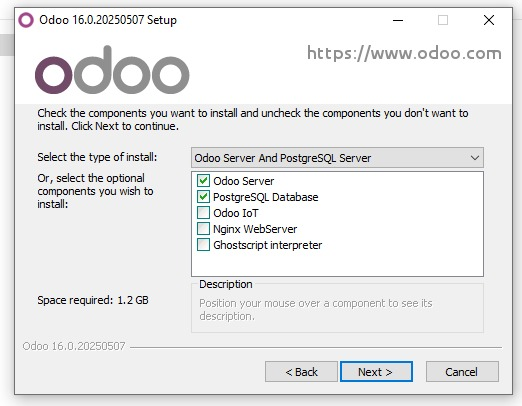Rellenamos la información realizando cambio de nombre y contraseña si es necesario y le damos a siguiente
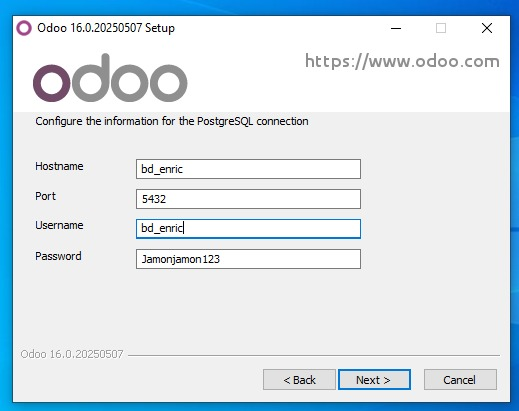Se empieza a instalar Odoo
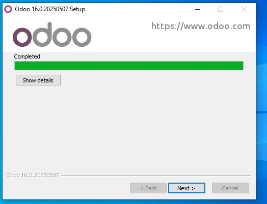Seleccionamos la opción de abrir al finalizar para que se ejecute la aplicación cuando le demos a finish
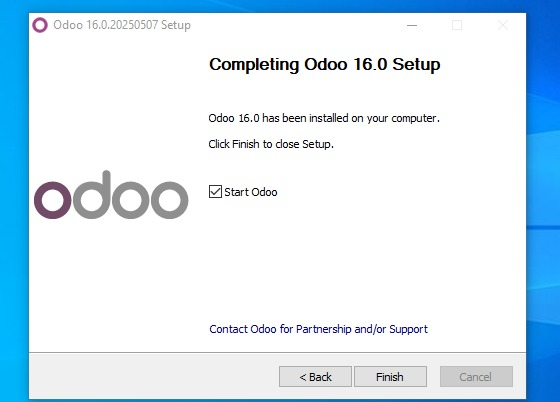Una vez iniciado el odoo nos aparecera la pantalla que vemos abajo en la imagen, tenemos que rellenar los datos como vemos pero con los nuestros propios. Cuando tengamos todos los datos rellados le daremos a la opcion de demo data y por ultimo le daremos clic a Create database
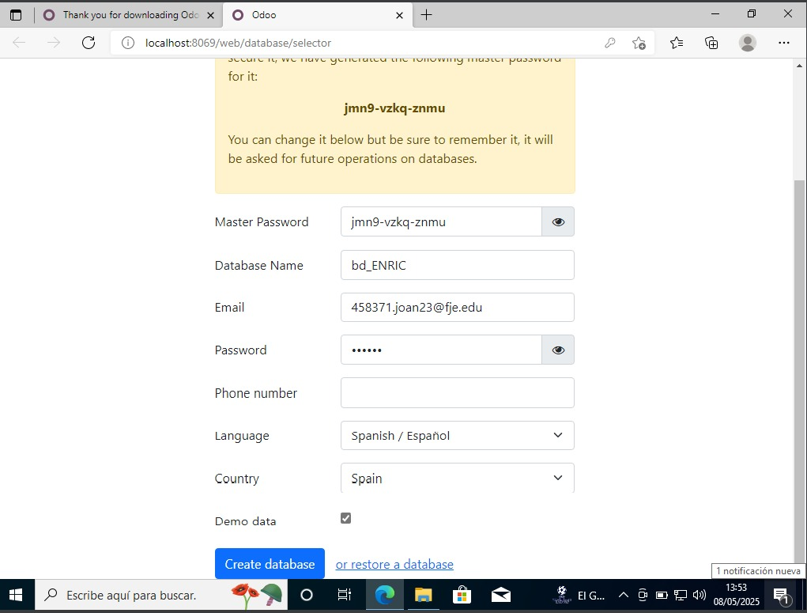Si has seguido todos los pasos te deberia de salir la pantalla que vemos abajo que es la de iniciar session, iniciamos session y nos deberia aparecer la pantalla que vemos en la otra imagen y con esto ya tendriamos odoo 16 instalado
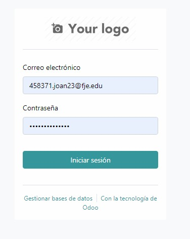